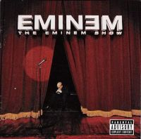
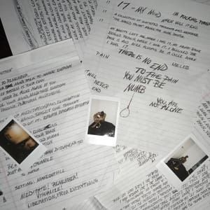

The Eminem Show es el cuarto álbum de estudio del rapero estadounidense Eminem, el tercero tras firmar por Aftermath, lanzado en 2002. Fue el álbum musical más vendido ese año en todo el mundo con 22 millones de copias, el primer sencillo, y el más exitoso, fue Without Me, sencillo que fue incluido en la película Mi villano favorito de 2010.
- «Curtains Up» (skit) 0:29
- «White America» 5:24
- «Business» (con Dr. Dre) 4:11
- «Cleanin' Out My Closet» 4:57
- «Square Dance» 5:23
- «The Kiss» 1:15
- «Soldier» 3:46
- «Say Goodbye Hollywood» 4:32
- «Drips» (con Obie Trice) 4:45
- «Without Me» (intro de Obie Trice) 4:50
- «Paul Rosenberg» (skit) 0:22
- «Sing for the Moment» (con partes de Dream On de Aerosmith) 5:39
- «Superman» (con Dina Rae) 5:50
- «Hailie's Song» 5:20
- «Steve Berman» (skit) 0:33
- «When The Music Stops» (con D12) 4:29
- «Say What You Say» (con Dr. Dre) 5:09
- «'Till I Collapse» (con Nate Dogg) 4:57
- «My Dad's Gone Crazy» (con Hailie Jade) 4:27
- «Curtains Close» (skit) 1:01
Goodbye & Good Riddance es el álbum de estudio debut del rapero estadounidense Juice Wrld . Fue lanzado el 23 de mayo de 2018 por Grade A Productions e Interscope Records . [5] La producción estuvo a cargo principalmente de Nick Mira junto con varios otros productores discográficos, incluidos Benny Blanco , Cardo , CBMix, Don Rob, Dre Moon , Ghost Loft y Mitch Mula.
El álbum cuenta con la única aparición como invitado del también rapero estadounidense Lil Uzi Vert . Ha sido reeditado varias veces, sobre todo para incluir el sencillo " Armed and Dangerous ", así como un remix de " Lucid Dreams " con Lil Uzi Vert y una aparición del cantante jamaicano Rvssian .
- «Intro» Don Rob 1:14
- «All Girls Are the Same» Mira 2:45
- «Lucid Dreams» Mira 3:59
- «Wasted» (con Lil Uzi Vert) CBMix 4:18
- «Armed and Dangerous» Dre Moon 2:49
- «Black & White» 3:06
- «Lean wit Me» Mira 2:55
- «I'll Be Fine» 4:04
- «Used To» Mira 2:56
- «Candles» 3:03
- «Scared of Love» Mitch Mula 2:50
- «Hurt Me» Sidepce 2:02
- «I'm Still» Mira 3:12
- «End of the Road» Mira 2:42
17
 17 es el primer álbum de estudio del rapero estadounidense XXXTentacion.4 Fue lanzado el 25 de agosto de 2017 por Bad Vibes Forever e Empire Distribution. Con una duración total de 22 minutos, el álbum apenas era un LP y no presenta una canción de más de tres minutos, lo que se considera poco convencional para un álbum de estudio. El álbum fue apoyado por el sencillo principal "Revenge", y es el segundo disco comercial de XXXTentacion, después de la compilación mixtape Revenge (2017). 17 incluye apariciones especiales de Trippie Redd y Shiloh Dynasty, y la producción estuvo a cargo de XXXTentacion.
- The Explanation
- Jocelyn Flores
- Depression & Obsession
- Everybody Dies in Their Nightmares
- Revenge
- Save Me
- Dead Inside (Interlude)
- Fuck Love (Ft. Trippie Redd)
- Carry On
- Orlando